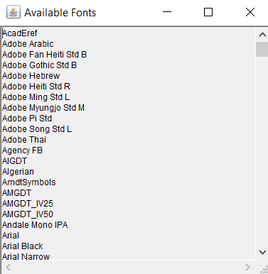

13. Java Program to Close the Frame using WindowAdapter Class
import java.awt.*;
import java.awt.event.WindowAdapter;
import java.awt.event.WindowEvent;
import java.awt.GraphicsEnvironment;
public class AvailableFontsApp extends Frame {
public AvailableFontsApp() {
// Set up the frame
setTitle("Available Fonts");
setSize(400, 300);
setLayout(new BorderLayout());
// TextArea to display the available fonts
TextArea fontDisplayArea = new TextArea();
fontDisplayArea.setEditable(false);
// Retrieve available font family names
GraphicsEnvironment ge = GraphicsEnvironment.getLocalGraphicsEnvironment();
String[] fontNames = ge.getAvailableFontFamilyNames();
// Display font names in the TextArea
for (String fontName : fontNames) {
fontDisplayArea.append(fontName + "
");
}
// Add TextArea to the frame
add(fontDisplayArea, BorderLayout.CENTER);
// Set up close operation
addWindowListener(new WindowAdapter() {
public void windowClosing(WindowEvent windowEvent) {
System.exit(0);
}
});
}
public static void main(String[] args) {
// Create and show the frame
AvailableFontsApp app = new AvailableFontsApp();
app.setVisible(true);
}
}
OUTPUT
